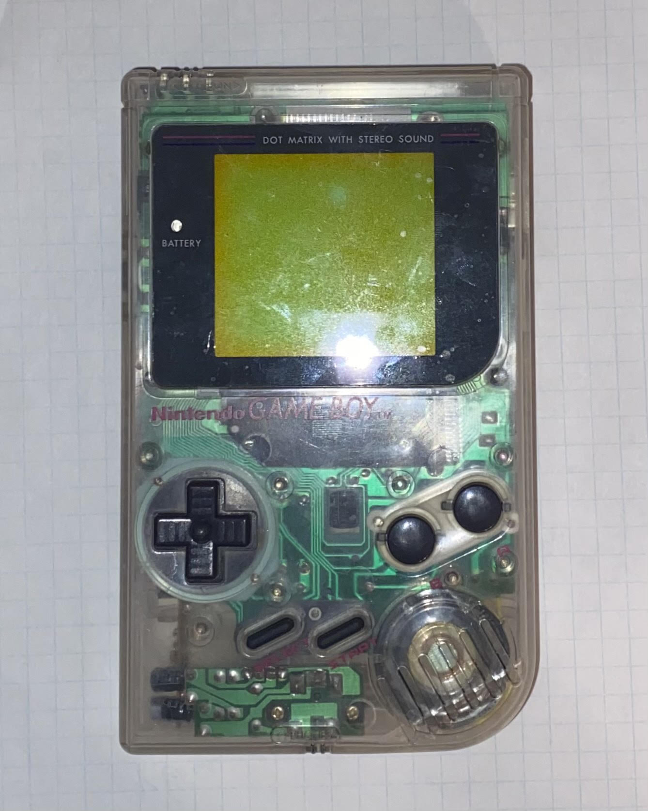
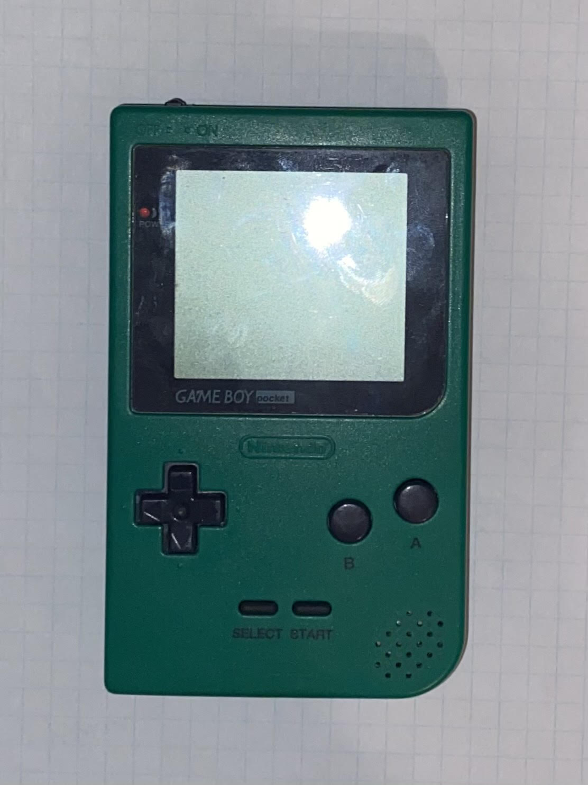
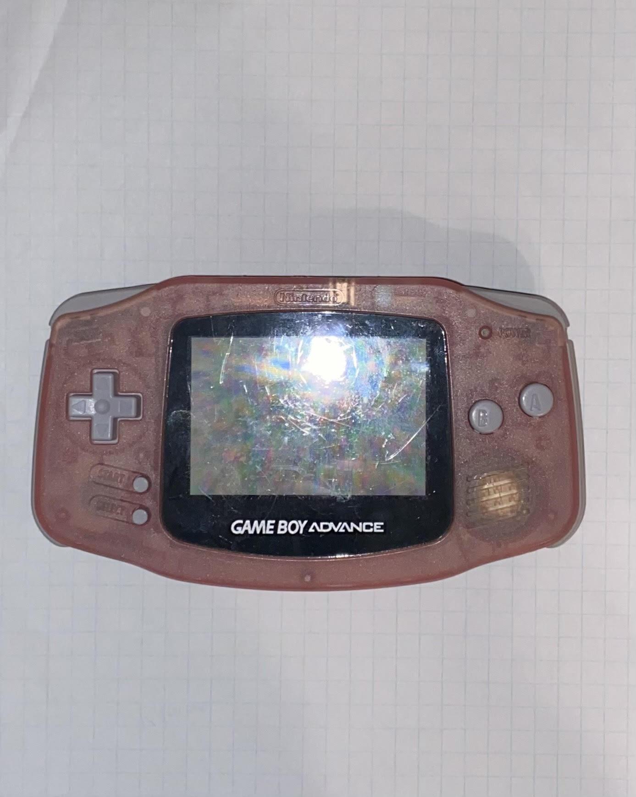
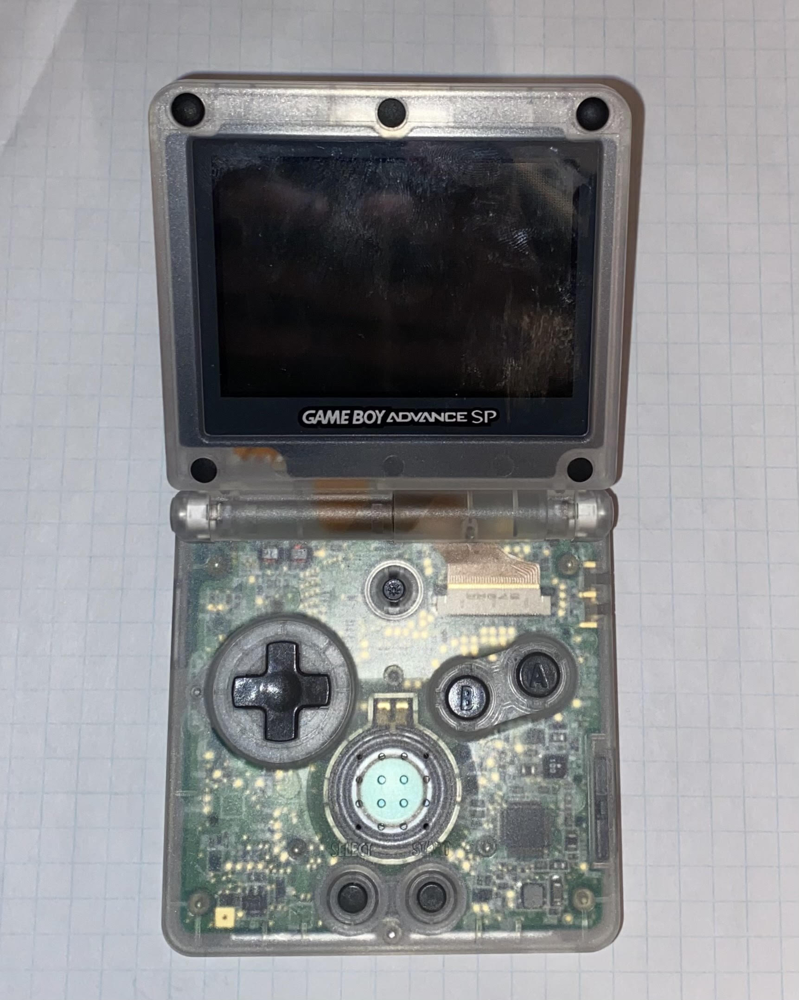

One of my hobbies is repairing and restoring old or broken Gameboys.
Here are some of the Gameboys I've referbished:

Original Gameboy
This is one of the first models of Gameboys that was released. This one that I have is from 1989. It was working when I bought it so I just cleaned the dust from it and touched it up a bit. I'm a big fan of the clear plastic because I love being able to see the electronics inside.

Gameboy Pocket
The Gameboy Pocket came out in 1996. When I got it there was bad battery corrosion on the terminals so I just cleaned that out with some white vinegar. It's a lot slimmer than the original Gameboy, which feels more comfortable in my tiny hands.

Gameboy Advance
The Gameboy Advance was released in 2000. This Gameboy Advance in particular was missing some buttons and the battery cover, so I ordered some replacement ones online. I really like the pink color of this one!

Gameboy Advance SP
This is a Gameboy Advance SP, released in 2003. This is the Gameboy I had as a child, and it was black originally, but I recently switched it into a clear plastic case because I just think it looks cooler. This also the one I play the most often because of its backlit screen.